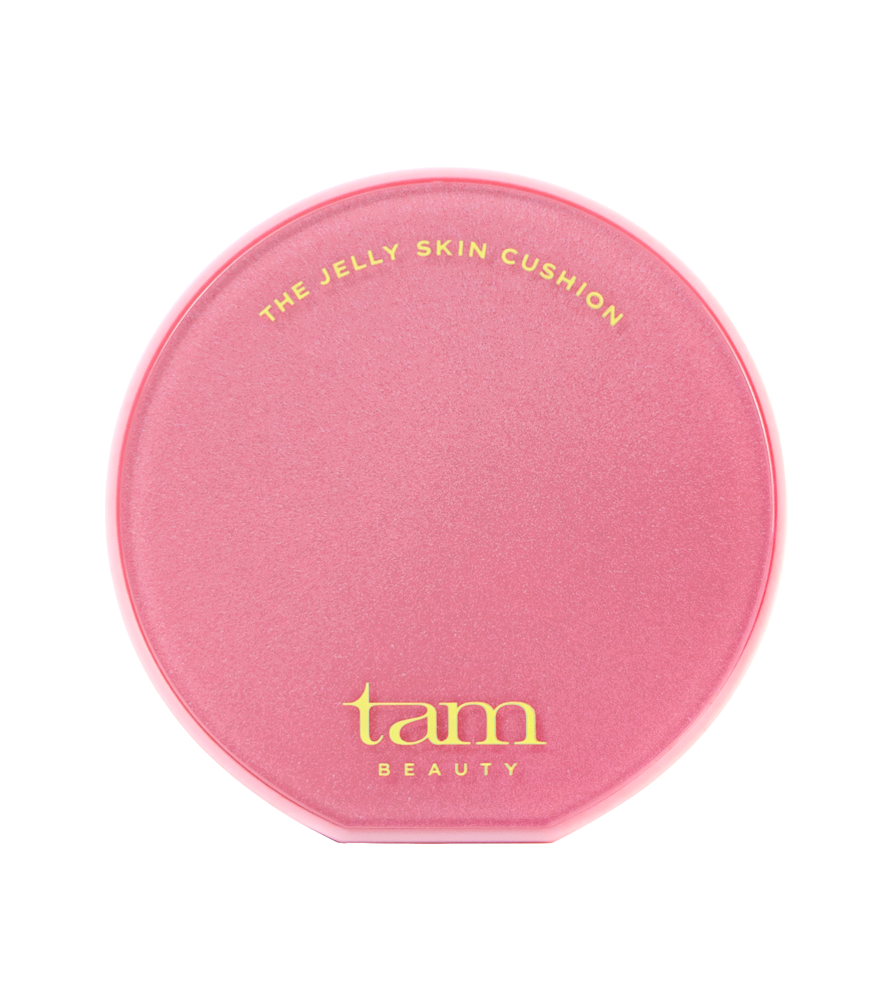
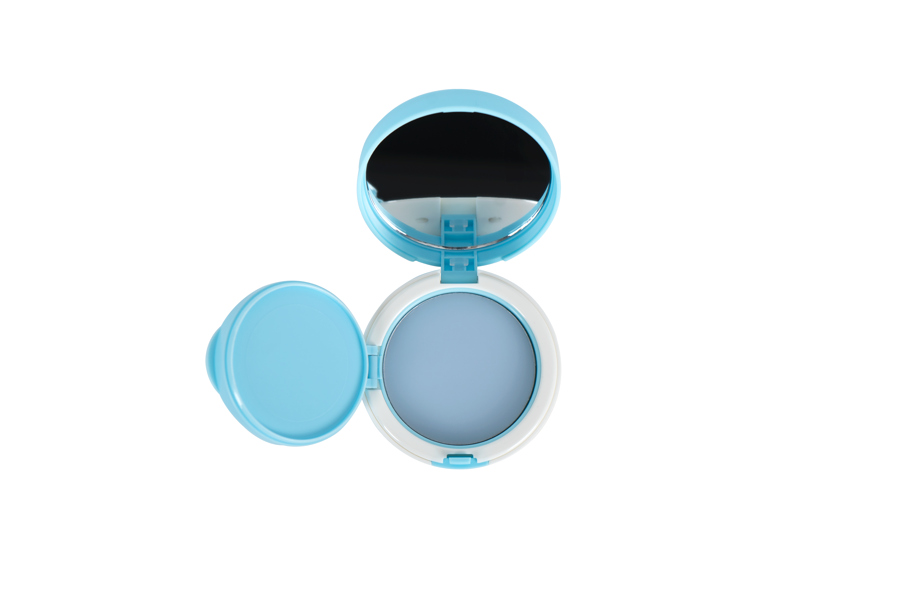
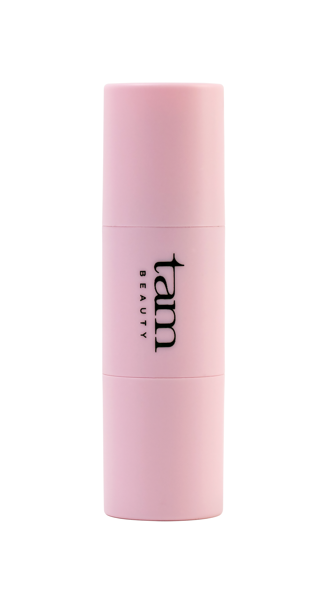
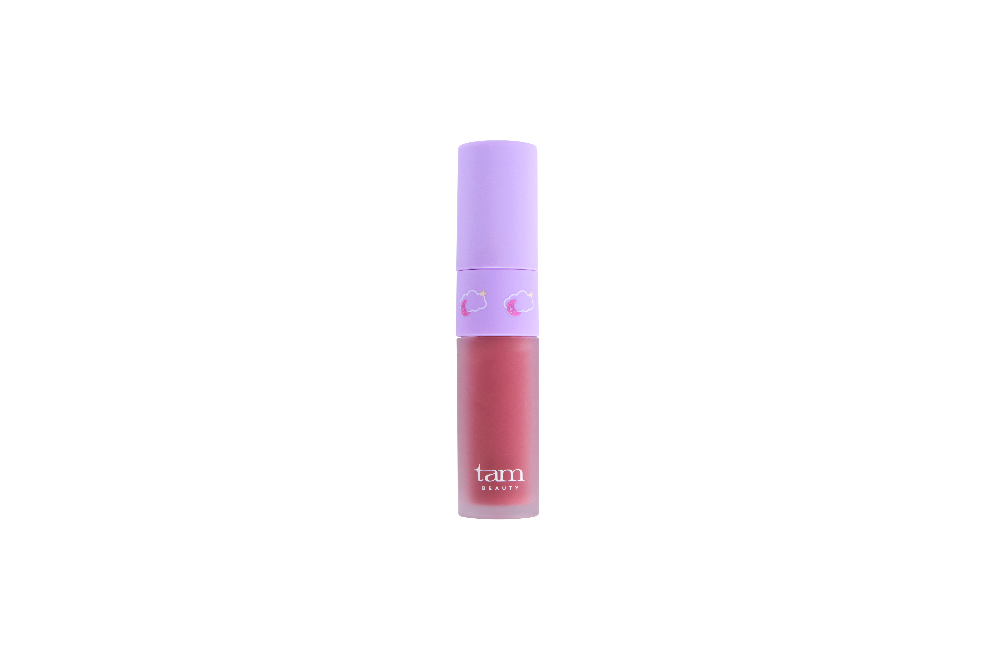

The Jelly.
맑게 빛나는 무드
반짝임을 더하고 싶은 날.
나만의 생기를 채우는 젤리.

오늘의 무드,
나의 컬러.
젤리의 반짝임부터 클라우드의 부드러움까지.
오늘의 나에게 끌리는 색과 질감을 만나보세요.

반짝임을 더하고 싶은 날.
나만의 생기를 채우는 젤리.

은은한 색에 마음이 가는 날.
나의 취향으로 물드는 클라우드.
베이스부터 치크와 립까지.
오늘의 메이크업을 함께할 탐뷰티.

